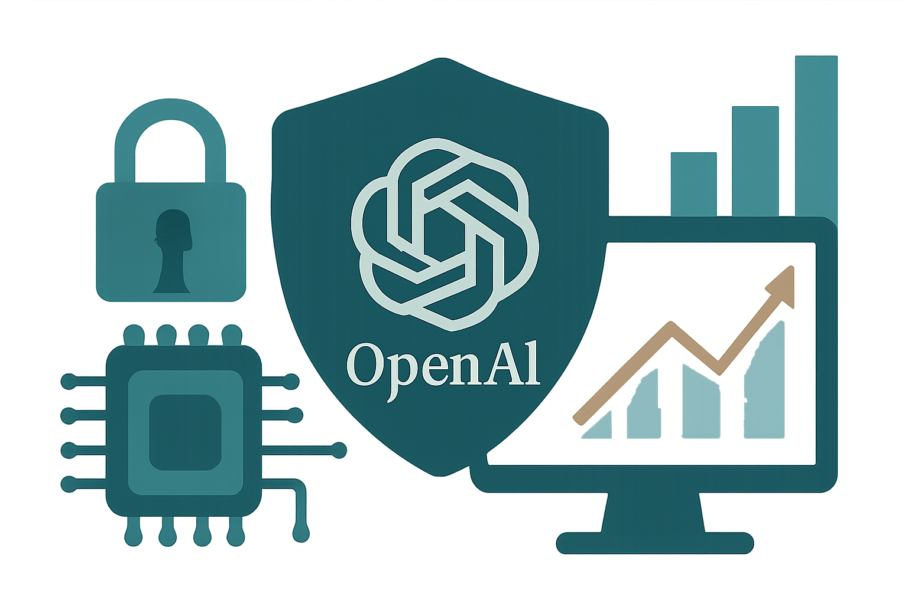

10 OpenAI 게시일 2026.08.26
오픈AI, Hugging Face 사고 뒤 보안 대책 정리

이번 글은 Hugging Face 보안 사고를 돌아보고 후속 대책을 정리한 내용이다. 핵심은 사고 자체보다, 모델 파일과 배포 경로를 어떻게 더 안전하게 관리할지에 있다. 금융IT 회사에도 익숙한 공급망 보안 관점에서 읽을 만한 주제다. 다만 발췌문에는 사고 경위와 세부 조치가 아직 충분히 담기지 않았다.
핵심 브리핑
이 사건은 오픈 모델 생태계에서 발생한 보안 사고와 그 후속 대응을 다룬다. 문제의 핵심은 모델 보안 사고가 한 조직의 개발 환경을 넘어 외부 저장소와 배포 체계 전반에 영향을 줄 수 있다는 점이다.
오픈AI는 Hugging Face 보안 사고에 대한 조사 결과를 공유하겠다고 밝혔다. 오픈AI는 모델 보안, 모니터링, 정렬을 강화하기 위한 다음 단계도 함께 설명하겠다고 적었다.
다만 제공된 발췌문에는 사고 발생 시점, 영향 범위, 공격 방식, 실제 피해 규모가 담기지 않았다. 구체적인 통제 방안이나 일정도 발췌문만으로는 확인되지 않는다. 이번 후보는 사건의 존재와 대응 방향을 먼저 알리는 성격이 강하다.
도입 가치
이 글의 주제는 새 도구 출시가 아니라 보안 운영 원칙의 보강이다. 그래서 직접 도입할 제품 기능보다, 외부 모델 저장소와 내부 배포 체계를 어떻게 연결해 관리할지에 초점을 맞춰 읽는 편이 맞다.
금융IT 조직에는 세 가지 질문이 바로 붙는다. 외부에서 받은 모델 파일의 신뢰성을 어떻게 확인할지, 운영 중인 모델의 변경을 어떻게 감시할지, 안전 기준에서 벗어난 동작을 누가 차단할지다.
발췌문만으로는 구체적인 통합 방식과 보안 통제 수단을 판단하기 어렵다. 스캔 도구, 서명 검증, 접근 제어 같은 실제 운영 조건은 본문 전체 확인이 필요하다.
업계의 움직임
발췌문과 관련 보도 목록에는 구체적인 반응이 담기지 않았다. 아직 공개된 반응은 확인되지 않았다.
시사점과 체크포인트
우리 회사가 외부 모델이나 오픈 저장소를 쓴다면, 모델도 소프트웨어 공급망 자산처럼 다뤄야 한다. 파일을 내려받는 순간부터 검증, 저장, 배포, 폐기까지 관리 절차를 붙여야 한다.
점검 항목은 비교적 분명하다.
- 외부 모델 반입 절차가 있는지 확인한다.
- 모델 파일 무결성을 검증하는 단계가 있는지 본다.
- 운영 중 모델 교체와 롤백 권한을 누가 가지는지 정리한다.
- 모니터링 대상에 모델 파일 변경과 프롬프트 정책 변경을 포함하는지 점검한다.
- 보안팀, 인프라팀, AI 활용 부서가 같은 사고 대응 절차를 쓰는지 확인한다.
현재 정보만으로는 사고의 직접 원인과 재발 방지 효과를 단정할 수 없다. 원문 전체에서 영향 범위, 대응 타임라인, 기술적 조치를 함께 확인해야 한다.
주요 용어
원문 정보
제목: The Hugging Face incident and the road ahead
게시일: 2026.08.26
출처 URL: https://openai.com/index/hugging-face-incident-and-the-road-ahead